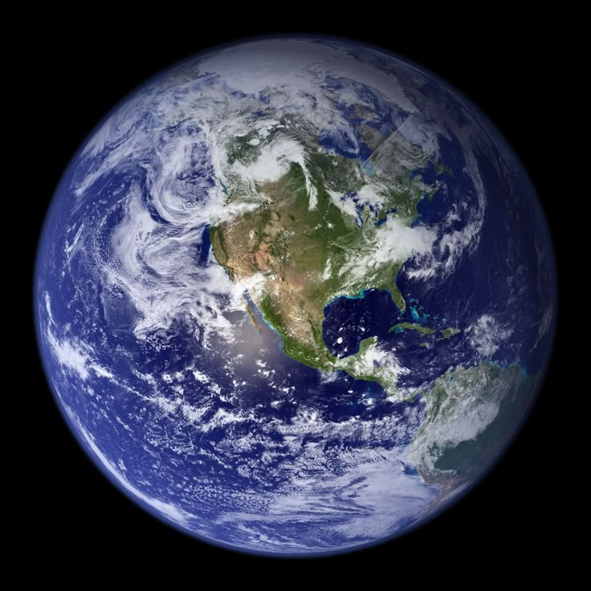

The Swift Planet: It has the shortest orbit, zipping around the Sun in just 88 days.
Extreme Temperatures: Because it lacks an atmosphere to trap heat, temperatures swing from 430°C during the day to -180°C at night.
Shrinking World: Mercury is tectonically active; as its iron core cools, the planet is actually getting smaller.
Sun Proximity: Despite being closest to the Sun, it is actually only the second hottest planet.
Cratered Surface: It looks very similar to our Moon, covered in thousands of impact craters.

The Hottest Planet:A runaway greenhouse effect traps heat, making the surface a constant 465°C—hot enough to melt lead.
Backward Rotation:Venus rotates on its axis in the opposite direction of most planets (retrograde rotation).
Long Days:A single day on Venus (one rotation) lasts longer than a Venusian year (one trip around the Sun).
Crushing Pressure:The air pressure is 90 times higher than Earth's—equivalent to being 3,000 feet underwater.
Volcanic World:It has more volcanoes than any other planet in the solar system.

The Goldilocks Zone: It is the only known planet with liquid water on its surface.
Life Sustaining: It is the only place in the universe where life has been confirmed to exist.
Protective Shield: Our magnetic field protects us from harmful solar radiation and cosmic rays.
Recycled Surface: Plate tectonics constantly "recycle" the Earth's crust, which helps regulate our climate.
Nitrogen-Rich: We are the only planet with an atmosphere containing 21% oxygen.

The Red Planet: Its reddish hue comes from iron oxide (rust) covering the surface.
Giant Volcanoes: Mars hosts Olympus Mons, the largest volcano in the solar system, which is three times the height of Mt. Everest.
Grand Canyon: It features Valles Marineris, a canyon system that would stretch from New York to Los Angeles.
The air is mostly carbon dioxide and is 100 times thinner than Earth's.
Water Ice: Evidence suggests Mars once had liquid water, and frozen water still exists at its polar ice caps.

The King of Planets: It is more than twice as massive as all the other planets combined.
Great Red Spot: A giant storm that has been raging for at least 300 years and is larger than earth
Shortest Day: Jupiter has the shortest day of any planet in the solar system, completing one rotation in just under 10 hours.
Mini Solar System:Jupiter has 95 officially recognized moons, including Ganymede, which is larger than Mercury.
Vacuum Cleaner:Its massive gravity helps protect the inner planets by sucking in or deflecting dangerous comets and asteroids.

Ring Leader: Saturn is famous for its prominent ring system, made up of countless small ice and rock particles.
Float Factor: Saturn is less dense than water, so if you could find a bathtub big enough, it would float!
Hexagon Storm:There is a permanent, six-sided (hexagonal) jet stream circling its north pole.
Moon Variety: Saturn has 82 confirmed moons, with Titan being the largest.
Magnetic Power:Its magnetic field is smaller than Jupiter's but still 578 times more powerful than Earth's.
Sideways Planet: Uranus rotates on its side, with an axial tilt of 98 degrees, likely due to a massive collision early in its history.
Ice Giant: Uranus is classified as an ice giant due to its composition of frozen gases like water, methane, and ammonia.
Blue-Green Tint:Methane gas in the atmosphere absorbs red light, giving the planet its distinct cyan color.
Extreme Seasons:Because of its tilt, the poles experience 42 years of continuous sunlight followed by 42 years of darkness.
Faint Rings:It has 13 known rings, which are very dark and narrow compared to Saturn's.

Windiest Planet: Neptune has the strongest winds in the solar system, reaching speeds of over 2,100 kilometers per hour.
Deep Blue: Like Uranus, Neptune has a deep blue color due to methane in its atmosphere.
Great Dark Spot: Neptune features a large storm similar to Jupiter's Great Red Spot.
Farthest Planet: Neptune is the farthest known planet from the Sun.
Longest Year: A year on Neptune lasts about 165 Earth years.